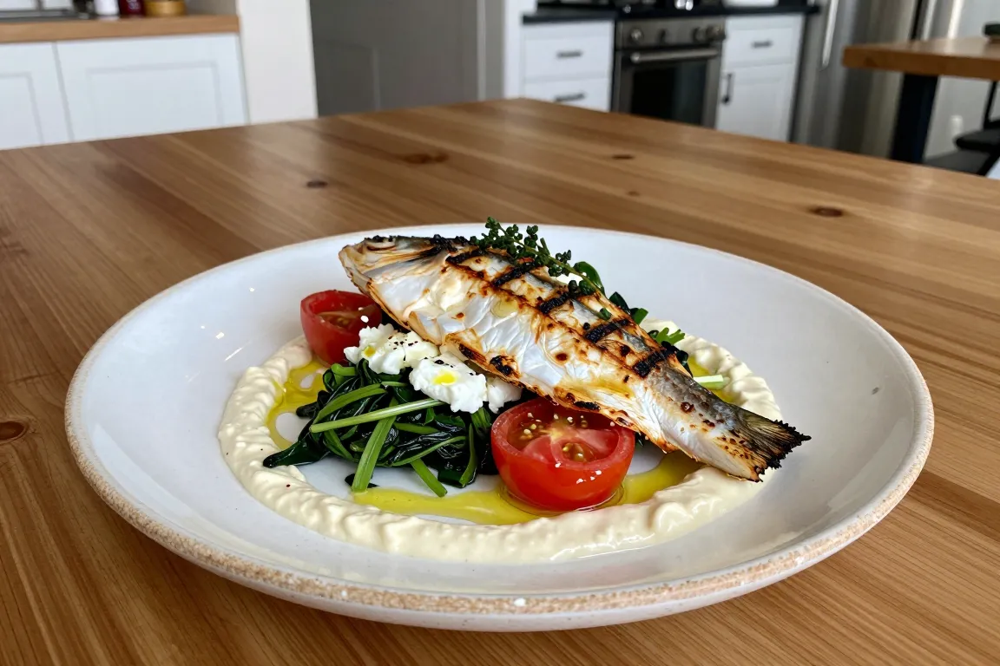

kjøkken · 1971–present · også: Markedsstyrt kjøkken, Fra gård til bord
Kjøkkenet som bygger på den lokale gården og én meny hver dag. Alice Waters åpnet Chez Panisse i 1971 og lagde enkle franske retter med sesongens råvarer fra navngitte produsenter, uten å gjøre mye med ingrediensen.

Kjerneidé
Den beste maten starter med de beste råvarene: kjøp moden mat fra kjente produsenter i sesong, og gjør så lite med den som mulig.
Designprinsipper
Bygg menyen på det gårdene leverer den uken, og skriv den samme dag.
Tilby én fast meny hver kveld, med samme rett til hver gjest.
Nevn gården, bonden eller åkeren på menyen.
Lag mat over vedfyr eller i vedovn der retten tillater det.
Hold hver rett til tre eller fire deler og hold tilberedningen enkel.
Server frukt, salat og grønnsaker når de er modnest, med olivenolje og urter.
Anret rustikt på en enkel tallerken: maten er dekorasjonen.
Hent ideer fra det franske og italienske landbordet, og bruk råvarer fra California.